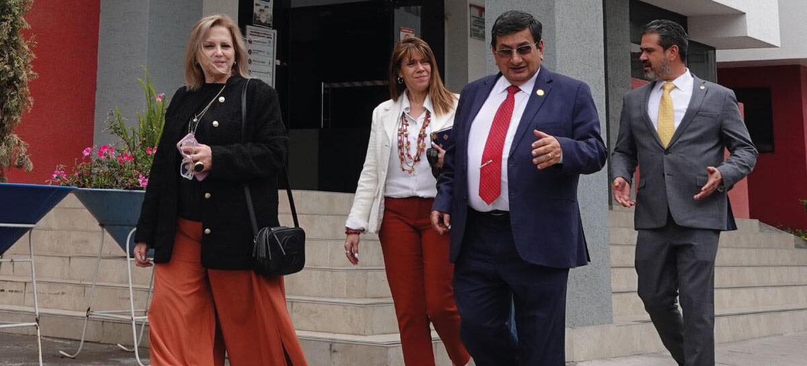
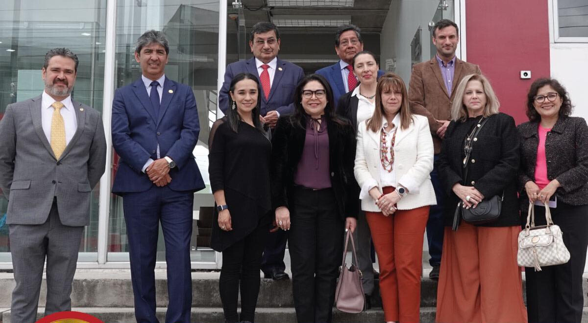

Universidad Tecnica de Ambato


La Universidad Técnica de Ambato fue creada el 18 de abril de 1969 según aprobación del Congreso Nacional. Nació con el lema "Educarse es aprender a ser libres" bajo el pensamiento y la égida del Doctor Carlos Toro Navas quien presidió la conformación del Primer Consejo Universitario, luego de realizada la primera Asamblea Universitaria un 10 de mayo de 1969. Vicerrector fue designado el economista Víctor Cabrera Guzmán.
La Universidad Técnica de Ambato tiene su antecedente académico en un Instituto Superior fundado por profesionales en la rama de Contabilidad que se creó un 13 de septiembre de 1959 (Periódico Énfasis, UTA, Noviembre de 1985, p3) Dicho Instituto se oficializó un 5 de julio de 1963 con sus escuelas de Contabilidady Gerencia
Entre las razones de motivación cultural para la creación de una universidad en Ambato, no se debe dejar de descartar la alusión a ser la tierra de aquellos personajes linajudos del siglo XIX que se destacaron en la literatura y en la política ecuatoriana como Juan Montalvo, Juan León Mera, Pedro Fermín Cevallos, Juan Benigno Vela, Luis Alfredo Martínez, José María Urbina, Celiano Monge y otros ligados a estos mismos apellidos por pertenecer a colaterales familiares destacados y prominentes.

"En este video, te invitamos a explorar la riqueza histórica y cultural detrás del Himno de la Universidad Técnica de Ambato. Este himno es mucho más que una composición musical; es un símbolo que representa la identidad, los valores y la tradición de nuestra querida institución. Acompáñanos en un viaje a través de los versos que han resonado en nuestras aulas durante décadas, y descubre la profunda conexión entre la música y el espíritu de la UTA. Conoceremos la historia detrás de su creación, su significado y cómo ha inspirado a generaciones de estudiantes y profesores a lo largo del tiempo. ¡Adéntrate en la melodía que nos une como parte de la Universidad Técnica de Ambato!"
"¡Bienvenidos a un recorrido único por las impresionantes instalaciones de la UNIVERSIDAD TÉCNICA DE AMBATO! En este emocionante viaje, te llevaremos a través de un campus excepcional que alberga una amplia gama de facultades y carreras, lo que lo convierte en uno de los complejos universitarios más completos y diversificados de todo Ecuador. Prepárate para explorar los edificios emblemáticos, laboratorios de vanguardia y espacios académicos innovadores que han impulsado el crecimiento y la excelencia educativa de esta institución a lo largo de los años. Descubre cómo la UTA se ha convertido en un referente en la educación superior del país. ¡Comencemos este fascinante viaje juntos!"
Rector de la Universidad Técnica de Ambato (UTA) y presidente de la Asamblea del Sistema de Educación Superior.
Vicerrector administrativo de la UTA, se dirigió a los asistentes para destacar la importancia del trabajo y esfuerzo entregado a la institución por los estudiantes, docentes y personal administrativo.
Profesor de Derecho Penal en la Universidad Tecnica de Ambato. Universidad Técnica de Ambato. abr. 2021 - actualidad 2 años 8 meses y participe del cargo de Secretario de la Universidad Tecnica de Ambato